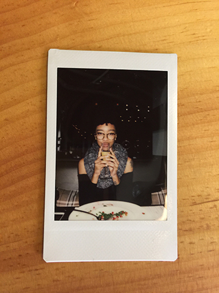
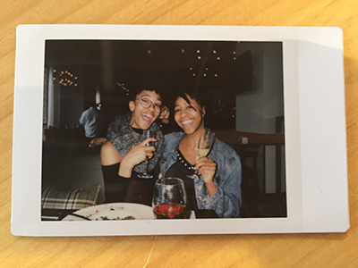

A Birthday in Baltimore
Me. May 23rd 2017. Baltimore, MD.
This year I spent my birthday in Baltimore and I would have NEVER seen this coming. It all started the afternoon the day before, May 22nd, my boyfriend Baxter and I went to a meeting for a comedy show he was co-hosting to plan the next event. One of the people we were going to meet with was an ex-roommate of ours who is a professional photographer. The organizers of the event chatted and went through the ups and downs of the previous show and began to hash out a few out the bits for the upcoming show. A few hours went by and it was over.
We all exited into the elevator when our ex-roommate looked over at my boyfriend and asks. “Hey, what are you doing tomorrow? I need an assistant for a shoot in Baltimore tomorrow.” My boyfriend, almost completely forgetting that it’s my birthday stops to ponder when it hits him, “It’s actually Amber’s birthday tomorrow…”. Our ex-roommate laughs and directs his next question at both of us, “So, what are you both doing tomorrow then? Wanna come to Baltimore?”. Now, I didn’t know anything about Baltimore, and honestly to this day I still don’t but we went along with the spontaneous plans and agreed to meet tomorrow, the morning of my birthday at 8AM in the Bronx.
Fast forward to the morning of the trip: I am not a morning person and I wasn’t entirely thrilled about spending my birthday in Baltimore but up until that point I didn’t have any birthday plans. However, when I arrived in Baltimore I did a ton of fun things. Here are a few photos taken that day...

My best friend, Amarie and I. May 23rd 2017. Baltimore, MD.

My boyfriend, Baxter and I. May 23rd 2017. Baltimore, MD.

My boyfriend, Baxter and I. May 23rd 2017. Baltimore, MD.